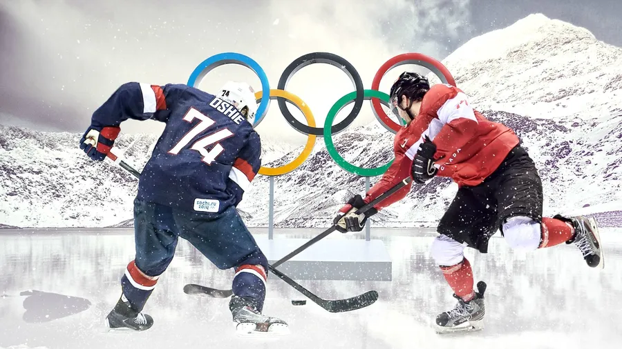
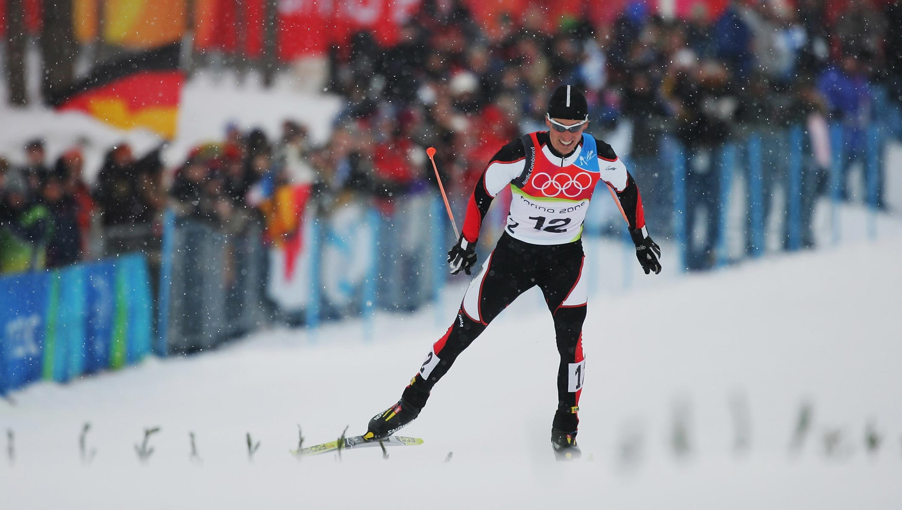
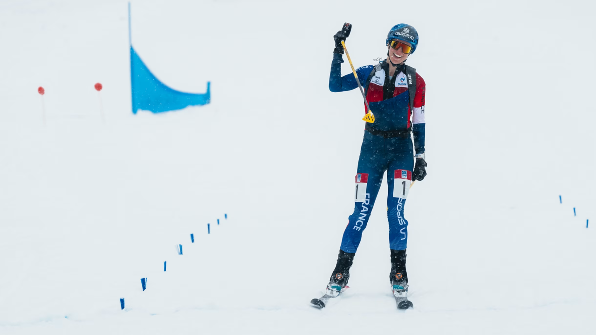

Sports
Ice Sports
Bobsleigh
Teams race down an icy track in a gravity-powered sled, navigating sharp turns at high speeds. Events include two-man, two-woman, four-man, and women's monobob.
Luge
Athletes lie on their backs on small sleds, racing feet-first down a frozen track. Precision and speed are key, with singles, doubles, and mixed relay events.
Skeleton
Competitors slide head-first on a small sled down an ice track. It's one of the most thrilling and dangerous Olympic sports.
Ice Hockey
Two teams compete to score goals by hitting a puck into the opponent's net using sticks. It's fast-paced and highly physical, with men's and women's tournaments.
Figure Skating
Skaters perform choreographed routines on ice, combining athletic jumps and spins with artistic expression. Events include singles, pairs, ice dance, and team competitions.
Speed Skating
Athletes race around a long oval ice track, aiming for the fastest time. Distances range from 500m to 10,000m, including team pursuit and mass start formats.
Short Track Speed Skating
Skaters race on a smaller rink in tight packs, often leading to dramatic overtakes and crashes. Events include individual distances and team relays.
Curling
Teams slide stones across ice toward a target area, using brooms to control speed and direction. Strategy and precision make it a unique winter sport.
Alpine, Freestyle, and Snowboarding

Alpine Skiing
Skiers race down steep, twisting courses at high speeds. Events include downhill, slalom, giant slalom, super-G, and combined formats.
Freestyle Skiing
Athletes perform aerial tricks and navigate moguls or terrain parks. Events include aerials, moguls, ski cross, halfpipe, and slopestyle.
Snowboarding
Snowboarders compete in events like halfpipe, slopestyle, big air, and snowboard cross. It blends speed, style, and technical skill.
Nordic Sports
Biathlon
Combining cross-country skiing with rifle shooting, athletes must balance endurance with precision. Events include individual, sprint, pursuit, mass start, and relays.
Cross-Country Skiing
Athletes race across snowy terrain using classical or freestyle techniques. Events include sprints, pursuits, and long-distance races.
Ski Jumping
Skiers launch off ramps and soar through the air, judged on distance and style. The 2026 Games will feature women's large hill for the first time.
Nordic Combined
A mix of ski jumping and cross-country skiing, this sport tests both explosive power and endurance. Athletes compete in individual and team formats.
New and Unique
Ski Mountaineering (SkiMo)
Making its Olympic debut, SkiMo involves climbing and descending snowy mountains using specialized gear. Events include individual races, sprints, and mixed relays.